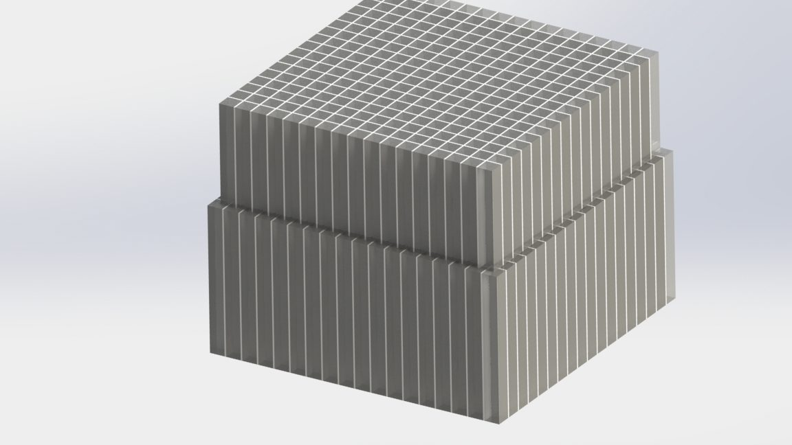
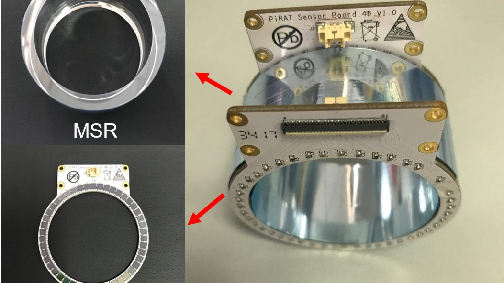
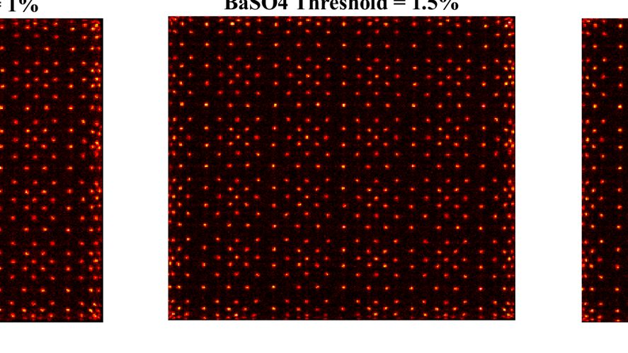
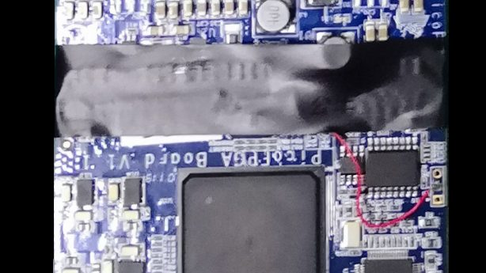

PET Detector Design
Time-of-flight (TOF) and depth-of-interaction (DOI) detectors; high-resolution arrays down to 0.35 mm crystal pitch; light-sharing window methods for compact preclinical and clinical scanners.
Related publications →Molecular Imaging · PET / SPECT Detector Engineering
I am a Postdoctoral Research Fellow at the Nuclear Medicine and Molecular Imaging (NMMI) Center, MGH / Harvard Medical School. My research focuses on the simulation, design, assembly, and electronic readout of detectors for positron emission tomography (PET) and single-photon emission computed tomography (SPECT), including high-precision systems with special geometric configurations for cardiac and brain imaging. I also work on femtosecond-laser processing of scintillator crystals to improve detector performance.

Four interlocking threads in molecular imaging instrumentation.

Time-of-flight (TOF) and depth-of-interaction (DOI) detectors; high-resolution arrays down to 0.35 mm crystal pitch; light-sharing window methods for compact preclinical and clinical scanners.
Related publications →
Special-geometry single-photon emission computed tomography systems for cardiac and brain imaging; detector assembly, characterization, and clinical translation at MGH.
Related publications →
Femtosecond-laser micro-structuring of LYSO and CsI:Tl scintillator crystals; engineering optical reflectance to enhance light transport and suppress inter-crystal cross-talk.
Related publications →
FPGA-based high-channel-count readout (100+ channels); time-to-digital converters with picosecond resolution; modular and robust platforms for evaluating detector configurations.
Related publications →Peer-reviewed journal articles and conference papers in molecular imaging.
Education, research positions, skills, and honors.
Download Full CV (PDF) ↓C++ · Python · Verilog HDL
MATLAB · Quartus · GEANT4 · Altium Designer · Cadence Allegro · SolidWorks · AutoCAD
PET detector design (TOF, DOI) · SPECT systems · scintillator laser processing · FPGA readout
Open to collaboration on detector engineering, molecular imaging, and laser-processed scintillators.